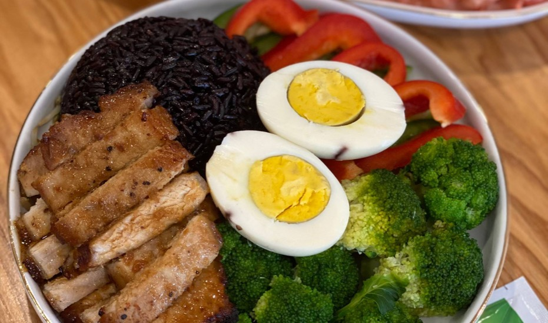

Nhịn 16 tiếng, ăn trong khung 8 tiếng

Nhịn 16 tiếng, ăn trong khung 8 tiếng. Chọn khung phù hợp nhịp sống nhất, ví dụ 10:00 đến 18:00.
Trong 16 tiếng nhịn, được uống: nước lọc, trà không đường, cà phê đen không đường.
Không uống: cà phê sữa, sữa, nước ép, trà sữa, nước ngọt có gas.
Thứ tự mỗi bữa: rau → đạm → tinh bột (giảm phần).
| Ngày | Bữa 1 (10:00) | Bữa 2 (14:00) | Bữa 3 (17:30, bữa cuối) |
|---|---|---|---|
| 1 | Trứng luộc + rau luộc + 1 lát bánh mì nguyên cám | Cơm (nửa chén), cá kho ít đường, canh rau | Đậu hũ sốt cà + rau xào |
| 2 | Sữa chua không đường + chuối nhỏ + hạt | Cơm, thịt gà luộc, rau muống | Canh bí đỏ thịt nạc + salad |
| 3 | Yến mạch nấu trứng | Bún thịt nạc (ít bún, nhiều rau) | Cá hấp + rau luộc |
| 4 | Trứng ốp la ít dầu + cà chua + rau | Cơm, thịt heo nạc luộc, canh cải | Đậu hũ nhồi thịt + rau |
| 5 | Bánh mì nguyên cám + trứng + dưa leo | Cơm, cá thu kho, rau luộc | Gà xé trộn rau |
| 6 | Sữa chua không đường + trái cây ít ngọt | Phở gà (ít bánh, nhiều rau) | Canh rau củ + đậu hũ |
| 7 | Tự chọn món bạn thích trong các ngày trên | Tự chọn | Bữa nhẹ, đủ rau và đạm |
Uống đủ nước, ngủ đủ. Tuần đầu chỉ cần quen nhịn 12–14 tiếng rồi tăng dần lên 16.
Mỗi người một cân nặng, một nhịp sống. Muốn biết khung giờ và khẩu phần hợp với riêng bạn?
1. Làm kiểm tra sức khỏe miễn phí
Trong app Hiểu để Khỏe, mất khoảng 2 phút, không cần đăng ký trước.
2. Nhắn mình để được tư vấn lộ trình
Mình hỏi vài câu về cân nặng, thói quen rồi gợi ý cách đi phù hợp, tuỳ cơ địa từng người.
Bạn có thể lưu trang này hoặc bấm In, chọn Lưu thành PDF để dùng khi không có mạng.